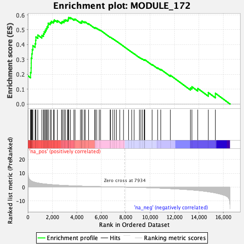

| | | Dataset | DE_genes2 |
| Phenotype | NoPhenotypeAvailable |
| Upregulated in class | na_pos |
| GeneSet | MODULE_172 |
| Enrichment Score (ES) | 0.582603 |
| Normalized Enrichment Score (NES) | 2.2168627 |
| Nominal p-value | 0.0 |
| FDR q-value | 0.0 |
| FWER p-Value | 0.0 |
Table: GSEA Results Summary

Fig 1: Enrichment plot: MODULE_172
Profile of the Running ES Score & Positions of GeneSet Members on the Rank Ordered List
| PROBE | GENE SYMBOL | GENE_TITLE | RANK IN GENE LIST | RANK METRIC SCORE | RUNNING ES | CORE ENRICHMENT | | 1 | PLAU | | | 0 | 25.881 | 0.1903 | Yes |
| 2 | MMP15 | | | 224 | 4.829 | 0.2123 | Yes |
| 3 | CTSB | | | 269 | 4.585 | 0.2433 | Yes |
| 4 | XPNPEP1 | | | 277 | 4.534 | 0.2762 | Yes |
| 5 | C1R | | | 280 | 4.530 | 0.3094 | Yes |
| 6 | BMP1 | | | 329 | 4.296 | 0.3381 | Yes |
| 7 | CTSE | | | 362 | 4.173 | 0.3669 | Yes |
| 8 | MMP7 | | | 415 | 3.935 | 0.3926 | Yes |
| 9 | FURIN | | | 598 | 3.413 | 0.4067 | Yes |
| 10 | MMP9 | | | 641 | 3.327 | 0.4286 | Yes |
| 11 | OLR1 | | | 660 | 3.289 | 0.4517 | Yes |
| 12 | LGMN | | | 818 | 3.014 | 0.4643 | Yes |
| 13 | FAP | | | 1150 | 2.542 | 0.4629 | Yes |
| 14 | MMP3 | | | 1280 | 2.377 | 0.4725 | Yes |
| 15 | UBD | | | 1337 | 2.325 | 0.4862 | Yes |
| 16 | SORD | | | 1431 | 2.237 | 0.4970 | Yes |
| 17 | CTSC | | | 1504 | 2.173 | 0.5086 | Yes |
| 18 | CTSS | | | 1570 | 2.115 | 0.5202 | Yes |
| 19 | KLK6 | | | 1655 | 2.031 | 0.5301 | Yes |
| 20 | CFB | | | 1669 | 2.020 | 0.5441 | Yes |
| 21 | ACY1 | | | 1832 | 1.895 | 0.5482 | Yes |
| 22 | GALT | | | 1919 | 1.816 | 0.5563 | Yes |
| 23 | GZMA | | | 2095 | 1.687 | 0.5581 | Yes |
| 24 | MMP2 | | | 2163 | 1.641 | 0.5661 | Yes |
| 25 | LYZ | | | 2414 | 1.483 | 0.5618 | Yes |
| 26 | TMPRSS2 | | | 2755 | 1.306 | 0.5508 | Yes |
| 27 | WFDC2 | | | 2827 | 1.275 | 0.5558 | Yes |
| 28 | CTSD | | | 2961 | 1.212 | 0.5567 | Yes |
| 29 | CTSO | | | 2970 | 1.208 | 0.5651 | Yes |
| 30 | ACE | | | 3083 | 1.162 | 0.5668 | Yes |
| 31 | CAPN5 | | | 3245 | 1.096 | 0.5651 | Yes |
| 32 | LAP3 | | | 3311 | 1.072 | 0.5690 | Yes |
| 33 | MMP1 | | | 3316 | 1.070 | 0.5766 | Yes |
| 34 | MMP12 | | | 3347 | 1.059 | 0.5826 | Yes |
| 35 | C1S | | | 3483 | 1.011 | 0.5818 | No |
| 36 | KLK10 | | | 3766 | 0.908 | 0.5714 | No |
| 37 | HP | | | 3864 | 0.876 | 0.5719 | No |
| 38 | MMP14 | | | 4304 | 0.748 | 0.5508 | No |
| 39 | CAPN2 | | | 4413 | 0.716 | 0.5495 | No |
| 40 | MMP11 | | | 4421 | 0.715 | 0.5543 | No |
| 41 | FOLH1 | | | 4427 | 0.714 | 0.5592 | No |
| 42 | PRSS8 | | | 4609 | 0.660 | 0.5531 | No |
| 43 | AEBP1 | | | 4695 | 0.639 | 0.5526 | No |
| 44 | CFI | | | 4969 | 0.577 | 0.5403 | No |
| 45 | CASP4 | | | 5468 | 0.456 | 0.5134 | No |
| 46 | PLCG2 | | | 5511 | 0.448 | 0.5141 | No |
| 47 | MMP13 | | | 5630 | 0.420 | 0.5100 | No |
| 48 | PROC | | | 5838 | 0.378 | 0.5002 | No |
| 49 | PLAT | | | 5946 | 0.356 | 0.4964 | No |
| 50 | LIPA | | | 6735 | 0.195 | 0.4499 | No |
| 51 | PRSS23 | | | 6756 | 0.192 | 0.4501 | No |
| 52 | TIMP1 | | | 6949 | 0.163 | 0.4396 | No |
| 53 | GALE | | | 7096 | 0.135 | 0.4318 | No |
| 54 | ACOX2 | | | 7246 | 0.107 | 0.4235 | No |
| 55 | CASP1 | | | 7522 | 0.061 | 0.4072 | No |
| 56 | MST1 | | | 7825 | 0.014 | 0.3890 | No |
| 57 | ALDH5A1 | | | 8238 | -0.047 | 0.3643 | No |
| 58 | ANPEP | | | 8496 | -0.092 | 0.3494 | No |
| 59 | HMGCS1 | | | 8693 | -0.128 | 0.3384 | No |
| 60 | CTSK | | | 9124 | -0.220 | 0.3139 | No |
| 61 | NEDD8 | | | 9247 | -0.254 | 0.3083 | No |
| 62 | HMGCS2 | | | 9379 | -0.284 | 0.3025 | No |
| 63 | DPP4 | | | 9521 | -0.316 | 0.2962 | No |
| 64 | NAPSA | | | 9551 | -0.324 | 0.2969 | No |
| 65 | PRDX6 | | | 9563 | -0.329 | 0.2986 | No |
| 66 | PEPD | | | 10165 | -0.514 | 0.2659 | No |
| 67 | F12 | | | 10614 | -0.668 | 0.2436 | No |
| 68 | CPM | | | 10873 | -0.755 | 0.2334 | No |
| 69 | APOC1 | | | 11658 | -1.070 | 0.1937 | No |
| 70 | ADAM9 | | | 13296 | -1.951 | 0.1085 | No |
| 71 | F2 | | | 13416 | -2.034 | 0.1163 | No |
| 72 | PROZ | | | 13891 | -2.410 | 0.1052 | No |
| 73 | CTSL | | | 14760 | -3.315 | 0.0768 | No |
| 74 | BAAT | | | 15335 | -4.176 | 0.0727 | No |
Table: GSEA details [plain text format]
Fig 2: MODULE_172: Random ES distribution
Gene set null distribution of ES for MODULE_172